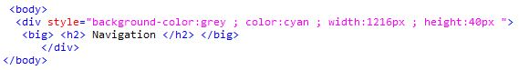
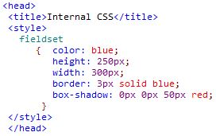
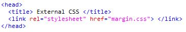

Introduction
-
CSS stands for Cascading Style Sheets.
-
Programmers prefer CSS because to enhance or style the Html contents on the browser.
-
CSS coding can be done in three ways
- Inline CSS Coding
- Internal CSS Coding
- External CSS Coding
-
Inline CSS : Inline CSS coding is done by using 'Style' attribute within the Html tag.
-
Internal CSS : All the properties and the corresponding values are given within "Style" tag , which must be coded in Html file inside the 'head' tag.
-
External CSS : In External CSS coding all the properties and its corresponding values are given in seperate CSS file and linked with Html file by using 'link' tag.The seperate CSS file must be saved with .css extension.
-
If all the three types of CSS coding are applied together then the priority will be inline >> internal >> external. link consists of two attributes they are,
- rel="stylesheet" .
- href="css-filename.css" .
-
In all the three types of CSS coding, common factor is usage of properties and its corresponding values.
- Example for inline CSS : 
- Example for Internal CSS : 
- Example for External CSS :
- 
-